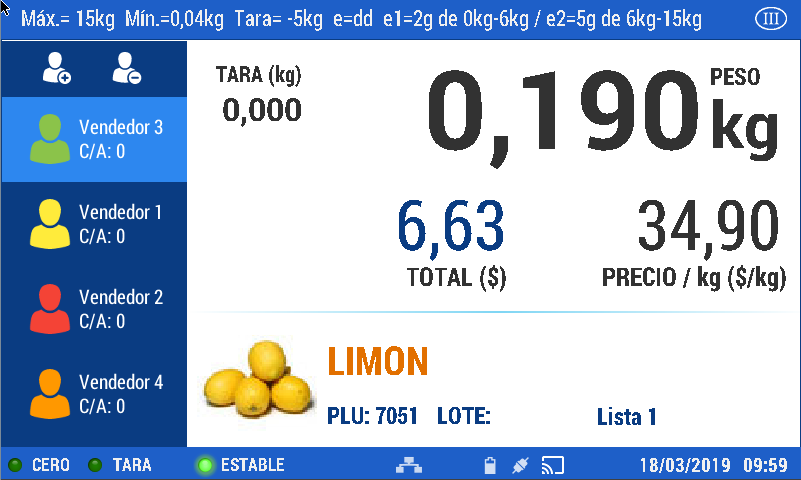
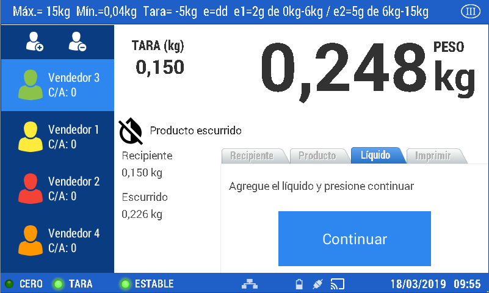

Artículos
Formas de convocar un artículo (PLU)
La balanza está diseñada para realizar la búsqueda de artículos de diversas maneras:
- Campo de escritura libre
- Acceso rápido (los productos deberán estar asociados a las teclas de acceso)
- Búsqueda por código o nombre del producto
En Menú - ABM - PLU encontrará los pasos necesarios para crear, editar o eliminar un artículo (PLU) en la balanza.
Para asociar los ítems a las teclas de acceso rápido consultar las acciones descriptas en Menú - ABM - Accesos
A. Campo de escritura libre
A modo de ejemplo, ejecutaremos la venta de un producto designado en la balanza como genérico (pesable o unitario) e identificados de fábrica con el número cero.
Este modo de venta no requiere configurar PLU ni accesos.
Coloque el número cero en el campo de escritura ubicado en el margen inferior.
Presione la tecla
Coloque el producto a pesar.
Presione la tecla para ingresar la venta.
Retire el producto de la bandeja. Realice esta operación con el total de productos a vender
Presione la tecla para visualizar el detalle de la venta.
En esta pantalla puede ejecutar distintas acciones:
- Anular ticket: elimina el ticket
- Eliminar ítems: suprime del listado de venta el ítem elegido
- Venta sin impresión: permite cerrar la venta sin imprimir el comprobante
- Imprimir: imprime el comprobante de venta
- Reimprimir Ticket: imprime un comprobante ya impreso
- Copias: determina la cantidad de copias a imprimir
Seleccione la opción que requiera para finalizar.
Al presionar el teclado numérico se habilita la opción para colocar el pago recibido y calcular el vuelto a reintegrar en caso que sea necesario (estos datos se imprimirán al cerrar la venta)

Presione la tecla para concluir.
B. Ingreso rápido
A modo de ejemplo, realizaremos una venta por peso, de un producto configurado en la balanza como pesable
Presione la página de acceso rápido donde esté registrado el producto
Presione la tecla de acceso rápido correspondiente a un plu pesable

Coloque el producto a vender sobre el plato de la balanza

Una vez estabilizado el peso, presione
Luego retire el producto de la balanza
Realice esta operación con el total de productos.
Continúe con los pasos descriptos en el ejemplo anterior.
Con el fin de presentar las diversas opciones con las que cuenta la balanza para la comercialización de productos, describiremos ahora los pasos a seguir para efectuar la venta de artículos escurridos dentro de la alternativa de ingreso rápido.
Para ejemplificar la comercialización de productos escurridos, realizaremos la venta de un artículo configurado como escurrido.
Presione la página de acceso rápido donde esté registrado el producto

Presione la tecla de acceso rápido correspondiente a Escurrido.
Agregue peso sobre la bandeja.
Presione
A continuación se visualiza la siguiente pantalla:

Presione
Coloque primero el recipiente que contendrá el producto y luego presione continuar
Ubique sobre la bandeja el producto escurrido y presione nuevamente continuar
Agregue el líquido y presione continuar

Luego, presione continuar
Luego, presione imprimir
Luego retire el producto de la balanza
En caso de pesar otro escurrido, repita los pasos descriptos.
C. Búsqueda por código o nombre del producto
A modo de ejemplo, realizaremos ahora una venta por unidad, de un artículo generado en la balanza como plu unitario
Presione la lupa.

Dentro de esta opción puede realizar las búsquedas de diversas maneras:

- Presiona la tecla para activar el teclado alfanumérico: presione las letras para escribir el nombre del producto buscado o cambie el teclado a números y coloque el código asignado al mismo.

- Desplazando el listado que se visualiza
- Utilizando los filtros establecidos en el margen superior

Cuando localice el ítem, debe seleccionarlo presionando sobre el mismo. Se visualiza en pantalla el producto elegido.

Presione la tecla para activar el campo habilitado para modificar el número de unidades a vender.

Utilice el teclado numérico para colocar la cantidad deseada y luego presione una sola vez para continuar con la venta o dos veces para finalizar.
Prosiga con los pasos descriptos en los ítems anteriores.